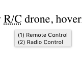

Often when writing for the web, we lean into using abbreviations. RAM, ROM, HTML, RGB, IOW, MPH, and so on. Sometimes it's reasonable to expect your readers to know what they mean... but surprisingly often the things we take for granted as known... aren't. This project is specifically intended to help address that in a comfortable way without changing your writing style much, or even your presumptions about your readers.
This Python3 class, aa_abbr.py, takes HTML text
as input, and using a terms definition file, generates HTML <abbr> tags
to wrap the terms you have defined.
In the provided definitions file, the term RAM is defined this way:
RAM,Random Access MemoryThis is what it looks like (in the Chrome browser) when a visitor to the HTML page hovers their mouse over the term RAM:
Basic use is very easy:
import abbr from aa_abbr # import class
ab = abbr('abbrdefs.data') # instantiate class
outText = ab.abbr(inText) # use class
In addition, there are set calls that provide comprehensive
control of class behavior, as well as get calls that read
back the class's current states. These are listed at the top of the class
in the comments.
One useful function is the ability to set a list of terms to be ignored, even though they are present in the definitions file. You can do this at instantiation, or by calling...
setNopelist(['term1','term2','termN'])...you would do this when a term is used in an unusual way that calls for it to be ignored in that particular context.
Another way to do this dynamically is to surround a term you don't want
processed with HTML space entities instead of actual spaces:
  That will prevent that particular instance of the
term from being processed by abbr().
The defaults for the definitions file are:
# are ignored||) delineate multiple definitionsWhen there are multiple definitions, they will be numbered. This is what that looks like:
R/C,Remote Control||Radio Control" R/C drone, hover"

You can set which characters in the definitions file do what. The only hard-coded behavior in terms of reading the definitions file is ignoring blank lines.
You can change these things either when invoking the class, or using
various set calls within the class prior to calling the
processor. You can also change which definitions file you use any time
prior to processing the text.
When defining terms in the definitions file, be aware that most HTML is
not allowed other than HTML character entities. This is partially because
the hover text in an <abbr> tag is contained within
double quotes, like so...
<abbr title="Random Access Memory">RAM</abbr>...and partially because hover text is not parsed by browsers for HTML formatting information.
You can use double quotes in a definition but you must encode them as their HTML entities:
"
The provided definitions file abbrdefs.data contains a
variety of commonly used terms. You should expand it to include any other
terms you desire. Adding terms will not slow down the processing step. A
longer definitions file does linearly increase the instantiation time,
but generally speaking, this should not be significant.
The class reads the definitions file once when it is instantiated. It won't read it again unless you call...
setSource('definitionsFILEname')...to change or re-read it.
When processing your HTML, each word delineated by leading and trailing spaces or a leading space and a trailing single non-alpha-numeric character prior to a trailing space is processed. So RAM would be processed here:
" RAM. "
But not here:
" RAM.<p>"
You can easily compensate for this by surrounding the
<p> tag (or any other tag) with spaces, which the
browser will collapse (hide) in the context of typical whitespace
processing:
" RAM. <p> "
A similar issue exists at the beginning and end of lines. If a term starts a line, the preceeding character was an EOL character rather than a space, so the term won't be caught. Simply add a space at the beginning of the line in the text to resolve this. Again, the browser will collapse the additional whitespace.
abbr() will catch plurals by default, that is, terms that
have a trailing s. So if ROM is defined in the
terms file, both ROM and ROMs will be processed. You can disable this
behavior at instantiation or by calling setPlurals(False).
If the plural term is located at the end of a line, the presence of the
terminating s followed by the EOL character is seen as
two non-alpha characters, and the term will not be processed.
Again, just add an extra space after the term to resolve this.
When plural detection is on, text processing is a little slower. This has not been a problem for me, but YMMV.
The following CSS adds a red, dashed underline border to an
<abbr> tagged term:
abbr {border-bottom: red dashed;}Like this:
"The ROM chips"
When you have HTML in your file, there are some HTML tags that have what
amounts to raw text in them. For instance, the <img>
tag can contain...
title="some title text"
If a term appears surrounded by spaces inside those quotes, then
<abbr> tags will be generated inside the
title quotes. Browser confusion can result.
To avoid this, you can use space entities instead of actual spaces around the term(s) at issue:
title="some ROM code"